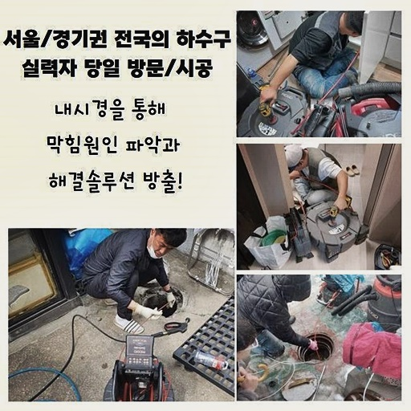
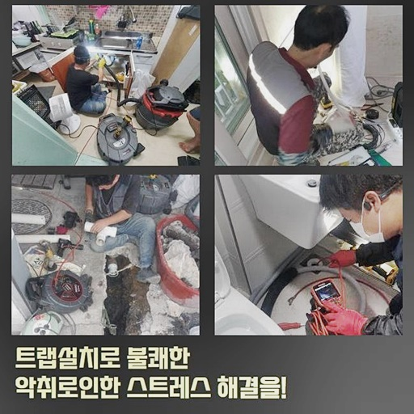
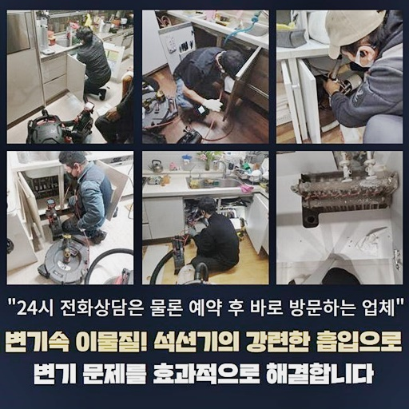
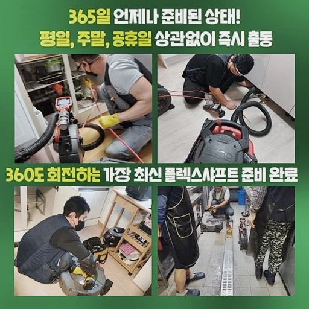
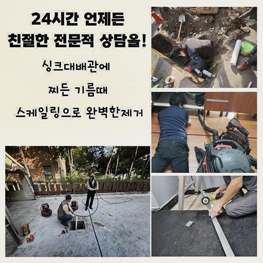
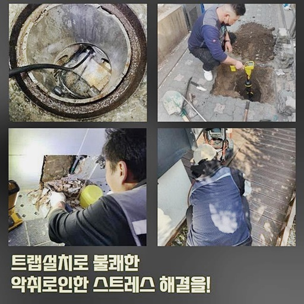

🏠 구로구 궁동화장실막힘 오류동 하수구뚫는곳 배관공사
용인 하수구막힘 전문 시공 후기

📋 작업 개요
- 위치: 용인
- 서비스 유형: 하수구막힘, 배관막힘, 맨홀막힘, 역류해결, 뚫는업체, 배관청소, 고압세척, 설비공사
- 작업 일시: 2024. 7. 30. 19:22
- 업체명: 하수구수사대 (010-5615-2118)
🔍 문제 상황
구로구 궁동화장실막힘 오류동 하수구뚫는곳 배관공사
배수관이 완전히 막혀버렸다면 보통의 도구로는 처리하기 어려워요
심각한 막힘은 간단하게 물리적 방식으로 뚫어내기만해서는 해결이 안되기 때문에 전문화된 조치가 중요합니다
하수관로가 빈틈없이 막힌다면 물이 일절 흘러가지 않으므로 집이나 직장에서 심각한 문제를 야기할 수 있어요
그리하여 이런 문제들을 단번에 제대로 수리할 수 있는 전문기사를 불러온 후 해결하는게 필요합니다
하수도 막힘 상황은 시간이 지체될수록 해결이 어려워질 수 있기 마련이라 빠르고 확실한 조치들이 필수입니다
어설프게 적당히 뚫는 경우 조만간 똑같은 상황을 다시 경험 할 가능성이 높아요
이와같이 반복적인 상황들은 시간과 수리비를 낭비하게 하고 이전보다 심각한 상황들을 불러올 수 있게됩니다
이번 사례는 배수관 막힘 현상이 나타났다고 문의를 하셨습니다
의뢰인은 하수배관 고압 물세척 요금에 대해 염려하셔서 상태를 분석한 후 답을 드렸습니다
수리비 견적은 매우 신중하게 생각하시는 고려항목이기 때문에 저희팀은 고객님의 재정 한도 내에서 최상의 해결책들을 적용하고자 힘쓰고 있습니다
다행스럽게도 예상한 예산액 내에서 수행될 수 있다고 판단이 들어 수리를 의뢰하기로 결정하셨어요
배관이 막히게 되는 사태가 발생하게 되면 우선 어째서 이와 같은 상황이 생기게 되었는지 알아봐야 합니다
평범하게 외적인 현상을 해결하기보다는 문제의 근본을 파악하는 것이 필요로 합니다
이를 처리하려면 어떤 수단을 활용할 것인지 검토해보고 실행하여야 합니다
사태의 이유를 정확히 찾지 않은채 임시적으로 대처하면 같은 유형의 문제들이 다시 발생할 확률이 상당합니다
이런 땐 표면적인 지점만 고친다고 해서 문제들이 해결되는 것이라고 할 수 없습니다

🔎 원인 분석
💡 전문가 진단: 정밀 진단 장비를 사용하여 슬러지의 고착 여부를 판명하고 타격/세척 작업을 실시했습니다.
하수배관의 경로와 사태의 이유를 전체적으로 검토하여 맞춤형 솔루션을 찾아야 해요
첫 번째층에 저온저장소와 하수구가 이어진 상태였는데 맨홀 안쪽이 막혀서 이곳이 역류하게 되며 엉망진창이 되었어요
역류가 발생하면 생활에 어려움을 야기할뿐더러 불쾌한 환경과 금전적 피해들을 발생시킬 수 있어요
의뢰인에게 전박적인 이야기를 들은 뒤에 막힘을 해결하려고 장치들을 준비했어요
준설작업 차에서 장치들을 가져오고 저층으로 이동한 후 문제지점을 검토했습니다
마음이 급하더라도 왜 그렇게 되었는지 이유를 파악하고 진행해야 합니다
문제점이 발생된 요인을 정확하게 알아야지만 완벽한 해결이 이루어집니다
카메라 내시경으로 조사한 결과 맨홀 안쪽에 물이 흐르지 않았습니다
이 경우 어딘가에서 막혀있다는 것을 암시합니다 물이 통과하지 않으면 물이 점차 고여서 끝내 넘쳐 흐르게 됩니다
걱정되는 점은 맨홀이 여기저기 있어서 시작 위치가 어딘지 짚어내기 까다로웠습니다
이와 같은 경우에는 차례로 문제들을 역방향으로 확인하면서 문제요인을 파악합니다
이와 같은 때에는 역으로 추적하면서 고온수 고압 세척을 통해 막힘을 해소 할 수 있습니다
고온의 고압클리닝은 강한 수압으로 배수구 안의 오염물을 제거하는 적합한 방법입니다
준설차에서 가져온 온수노즐을 활용해 찌꺼기를 없애기 시작했어요
고압분사기를 이용해 거센 물줄기로 불순물을 부수고 청소합니다
역류가 발생할만큼 꽉 막혀버린 상황이라서 반복적으로 작업해도 해결하기가 만만치 않았어요
꽉 막혀버린 오염물은 강한 물발과 반복되는 시도를 통해 세척할 수 있습니다
우리는 반복되는 고압세척으로 끝내 찌꺼기를 분쇄하였습니다

🔧 작업 과정
꾸준한 시도 끝에 결과적으로 막힌부분을 해결할 수 있었어요
기름찌꺼기와 이물질들이 한가득 배출되었습니다
이러한 찌꺼기는 하수배관을 대부분 막히도록 하는 핵심 요인입니다
고객께서 전하시기를 건물 건축 이후에 한 차례도 막힌적이 없었기 때문에 그저 지내왔다고 하셨어요
오랜세월동안 쌓인 오염물은 추후에 중대한 문제들을 발생시킵니다
오랜기간 쌓여온 이물질이 모여서 거꾸로 올라온것이죠
누적된 잔여물과 기름덩이들은 배수구의 흐름을 저해하며 결과적으로 하수를 역류시킵니다
틈틈이 내시경 기기를 사용해 배수관 막힘 정도를 체크하였어요
배관 카메라 기구는 배수관 안쪽의 현황을 확실하게 점검할 수 있는 핵심적인 기기입니다
큰 이물질은 편하게 제거가 되는데 배관 안쪽에 고착된 잔여물은 잘못 제거할경우 관로에 파손될 우려가 있어 주의깊게 작업을 진행했습니다
관로에 충격이 가면 심각한 손상이 생길 수 있으므로 집중을 해야합니다
저희 전문가들은 세밀한 조치를 통해 적정 요금으로 배수관 고압물청소을 실시하고 있어요
확실한 서비스와 합당한 요금으로 소비자 만족도를 높여주는 중요한 요인이예요
높은층의 수직배관과 맨 아래층의 배수관을 점검해보니 키친타올이 가득 차 있었습니다
키친타올의 경우 하수관에 심각한 막힘을 야기할 수 있는 주된 이유 중 한가지입니다
물티슈는 배수관에 넣으면 문제가 되기에 고객님들께 기억해 달라며 요청했습니다
물티슈는 시간이 지나도 녹지 않기 때문에 하수관을 종종 막아버립니다
꼼꼼하게 작업을 마치고 난 후 내시경 카메라 장비를 사용하여 한번 더 배관 내부를 체크했습니다
작업 마무리 후에도 안쪽상황을 검토하는 건 문제점이 말끔히 해소되었는지 검토하는 핵심적인 프로세스입니다
불순물이 확실하게 치워져서 하수배관이 원활하게 물이 흐르는 것을 파악했습니다
배수구가 순조롭게 물이 통하면 이제는 하수가 역류되지 않습니다
고객님들께도 작업 전과 후의 상황을 보여드리고 앞으로는 잘 관리하겠다는 이야기를 들었어요
고객님께 작업 전후 상황을 알려드림으로써 믿음을 쌓았습니다
최종적으로 문제였던 냉장보관소에 들어간 후 역류되었던 물이 배수됐는지 검사한 후 창고바닥을 깨끗하게 정리해드렸습니다
정리정돈은 시공의 마무리 순서로 현장의 문제를 완벽히 처리하는데 필수적인 역할을 맡고 있습니다
환기시스템을 활용해 냄새를 제거하며 작업들을 완료했습니다
불쾌한냄새 제거과정은 깨끗한 공간을 만드는데 있어 필요합니다
배수관 막힘은 즉시 처리해야 할 심각한 문제예요


✅ 작업 완료
하수도 막힘현상은 방관하면 더 큰 장애가 발생합니다
혹시 지금 이상이 있다면 언제 어느때나 의뢰해주시면 특수장비를 사용해 즉시 해소해 드리겠습니다
문제가 발생했을 때 발빠른 대처는 별도의 손해를 예방합니다
이번 작업장의 고압 세정비용도 합당하게 책정했어요
적정 수리비로 고객님께 믿음을 주는 필수 요소들입니다
본 사례와 같이 시급한 상태뿐 아니라 사소한 이슈라도 전문인의 수리가 필요하다면 언제나 저희 기술자에게 상담 요청가능합니다
전문기술자의 지원은 막힘을 신속하면서 제대로 처리하는데 필요합니다 납득가능한 수리비로 빠르고 꼼꼼하게 문제상황을 처리하여 드리고 있습니다
마음 놓고 연락주세요 정밀하고 빠른 고객지원 서비스는 만족을 향상시키는 필수 요소들입니다




⚠️ 하수구 배관 막힘 예방 및 관리 가이드
- ✅ 머리카락, 비닐, 물티슈 등 물에 분해되지 않는 이물질은 하수구 유입을 절대 금지해 주세요.
- ✅ 하수구 거름망을 씌우고 모여진 이물질은 주기적으로 쓰레기통에 바로 비워주셔야 합니다.
- ✅ 배관 노후가 심할 경우 이물질이 더 쉽게 걸리므로 주기적인 배관 세척(고압세척 등)을 권장합니다.
- ✅ 작업 후 1년 이내 재발 시 하수구수사대에서 무상 A/S 보증 서비스를 제공합니다.
💡 핵심 정리
- 확실한 장비 작업(내시경 점검 및 샤프트 스케일링)으로 원인을 뿌리 뽑습니다.
- 작업 후 1년 이내에 동일한 부위 재발 시 100% 무상 A/S 서비스를 보장합니다.
- 서울 · 경기 · 인천 전 지역에 24시간 언제든 긴급 출동할 수 있도록 항시 대기 중입니다.
❓ 자주 묻는 질문 (FAQ)
🚨 용인 하수구막힘 문제로 고민이신가요?
정확한 원인 진단과 확실한 시공으로 재발 없는 해결을 약속드립니다.
24시간 긴급 출동 | 서울 · 경기 · 인천 전지역 | 1년 내 재발 시 무상 A/S